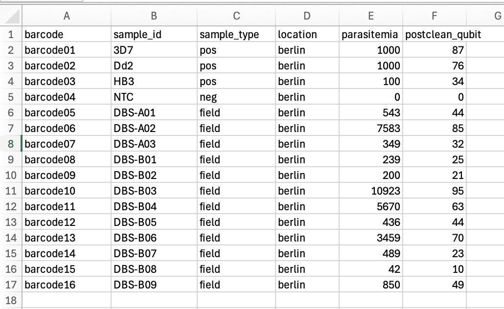

Basic Usage
Quick summary
To run Nomadic, open a terminal window and type the following:
conda activate nomadic
cd <path/to/your/workspace>
nomadic realtime <expt_name>
<path/to/your/workspace>should be replaced with the path to your Nomadic workspace.<expt_name>should be replaced with the name of your experiment.- You should have given your experiment the same name in MinKNOW.
- You should have given your metadata file this name, and put it in your workspace metadata folder (
<path/to/your/workspace>/metadata/<expt_name>.csv).
The dashboard will open in a browser window on your computer.
Detailed instructions
Before starting
Before starting make sure you have installed Nomadic (see Installation).
Then, open a terminal window and activate the Nomadic environment:
conda activate nomadic
Starting a workspace
Nomadic creates workspaces to help organise your input data and analysis results. A workspace is just a folder on your computer where all of the input data needed to run Nomadic, as well as your analysis results, are stored. You can create a workspace with the following command:
nomadic start pfalciparum
By default the name of the new workspace is nomadic. You can enter the workspace by typing:
cd nomadic
Inside of the workspace, you should see the following folders:
| Folder | Contents |
|---|---|
beds |
Contains information about amplicons used in sequencing. |
metadata |
Where you should put all of your metadata files. |
results |
Where the results from running Nomadic will go. Initially it will be empty. |
Using Nomadic for real-time analysis
Nomadic can process nanopore squencing data being produced by MinKNOW in real-time. To do so, follow the steps below.
Step 1: Start nanopore sequencing with MinKNOW
Use MinKNOW to start nanopore sequencing. Make sure to take note of the experiment name, you will need this in later steps.
Step 2: Create a metadata file
Create a metadata file containing information about what barcodes you have used and their associated sample IDs. Here is an example:

Only the barcode and sample_id columns are mandatory. The rest are optional, and you are also free to include any other columns you like.
Move your metadata file into the metadata folder of your Nomadic workspace, and give it the same experiment name you used with MinKNOW (<path/to/your/workspace>/metadata/<expt_name>.csv).
Step 3: Run
Open a terminal window and start the nomadic conda environment:
conda activate nomadic
Now navigate to your workspace folder:
cd <path/to/your/workspace>
And launch Nomadic:
nomadic realtime <expt_name>
The dashboard will open in a browser window on your computer.
Using Nomadic to view a completed experiment
Once an experiment is completed, you can still open the Nomadic dashboard to view your results.
Step 1. Activate the Nomadic environment.
Open a terminal window and activate the Nomadic environment:
conda activate nomadic
Step 2. Navigate in terminal to your workspace.
If you created your workspace in your home folder, this will simply be:
cd <path/to/your/workspace>
Step 3. Open the dashboard.
To open the dashboard of a specific experiment, you only need to know the experiment name. You can then open the dashboard by running:
nomadic dashboard <expt_name>
<expt_name> with the name of the experiment.